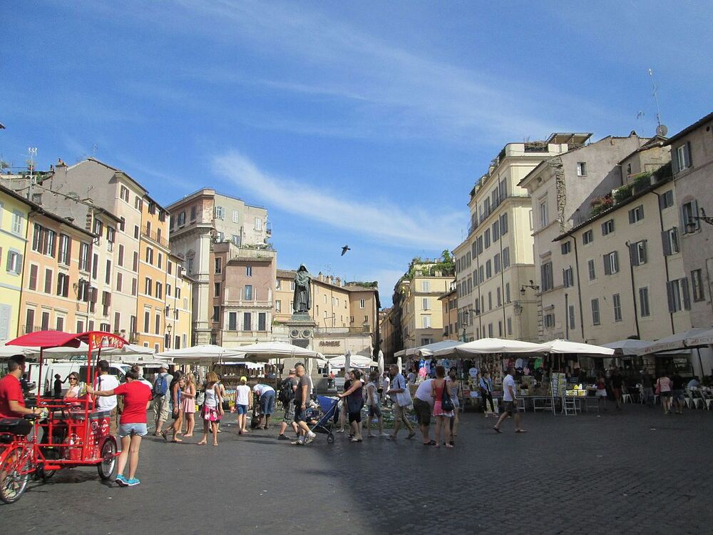

<!doctype html>
<html lang="en">

<head>
    <meta charset="utf-8">
    <meta name="viewport" content="width=device-width, initial-scale=1">
    <title>Piazze di Roma</title>
    <link href="https://cdn.jsdelivr.net/npm/bootstrap@5.3.0-alpha3/dist/css/bootstrap.min.css" rel="stylesheet"
        integrity="sha384-KK94CHFLLe+nY2dmCWGMq91rCGa5gtU4mk92HdvYe+M/SXH301p5ILy+dN9+nJOZ" crossorigin="anonymous">
</head>

</html>

<body>
    <div class="row g-0">
        <div class="col-md-4">
            <h2 class="px-4 py-2">Le piazze di Roma</h2>
        </div>
        <div class="col-md-8"><ul class="nav nav-pills nav-fill my-2">
                <li class="nav-item">
                    <a class="nav-link" href="./index.html">Piazza di Spagna</a>
                </li>
                <li class="nav-item">
                    <a class="nav-link" href="./popolo.html">Piazza del Popolo</a>
                </li>
                <li class="nav-item">
                    <a class="nav-link" href="./campidoglio.html">Piazza del Campidoglio</a>
                </li>
                <li class="nav-item">
                    <a class="nav-link active" href="./fiori.html">Campo dei Fiori</a>
                </li>
                <li class="nav-item">
                    <a class="nav-link" href="./mincio.html">Piazza Mincio</a>
                </li>
            </ul>
        </div>
    </div>
    <div class="container-fluid">
        <div class="card my-4 mx-auto" style="max-width: 1280px;" id="fiori">
            <div class="row g-0">
                <div class="col-md-8">
                    
                </div>
                <div class="col-md-4">
                    <div class="card-body">
                        <h2 class="card-title mb-4">Campo de' Fiori</h2>
                        <p class="card-text fs-5 lh-base p-2">Si chiama così perché nel 1400 è stato veramente un "campo" con erba e fiori. Oggi è uno dei luoghi più vivi e famosi della città: di mattina c'è il mercato, specialmente per la frutta e verdura; per il pranzo e la cena arrivano i turisti che amano le trattorie con i tavoli all'aperto. </p>
                        <p class="card-text fs-5 lh-base p-2">Di notte la piazza è il luogo d'incontro e di divertimento per moltissimi giovani (romani e non solo), a volte anche troppo caotico e rumoroso.</p>
                    </div>
                </div>
            </div>
        </div>        
    </div>
    <script src="https://cdn.jsdelivr.net/npm/bootstrap@5.3.0-alpha3/dist/js/bootstrap.bundle.min.js"
        integrity="sha384-ENjdO4Dr2bkBIFxQpeoTz1HIcje39Wm4jDKdf19U8gI4ddQ3GYNS7NTKfAdVQSZe"
        crossorigin="anonymous"></script>
    <script src="https://cdn.jsdelivr.net/npm/@popperjs/core@2.11.7/dist/umd/popper.min.js"
        integrity="sha384-zYPOMqeu1DAVkHiLqWBUTcbYfZ8osu1Nd6Z89ify25QV9guujx43ITvfi12/QExE"
        crossorigin="anonymous"></script>
</body>

</html>